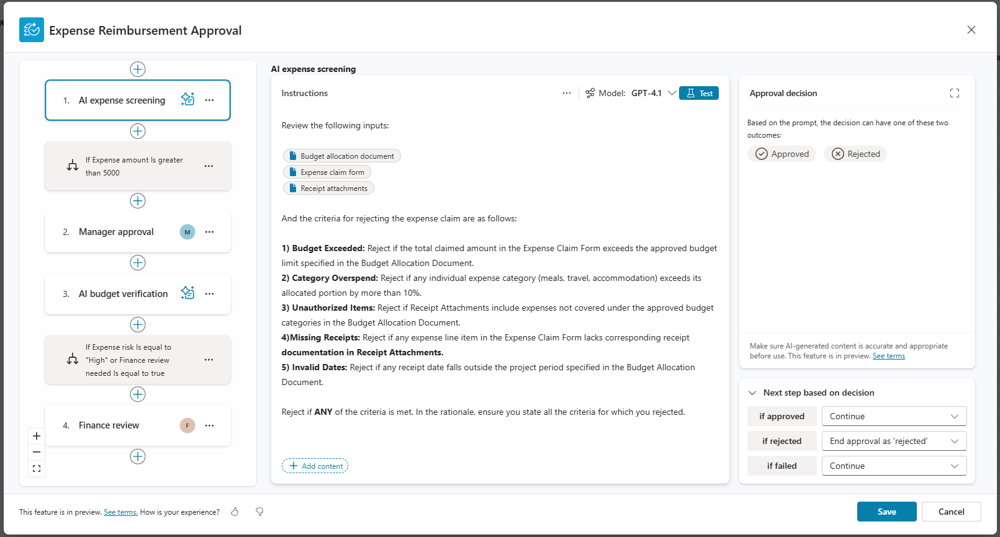
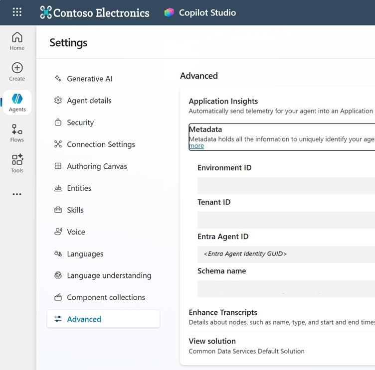
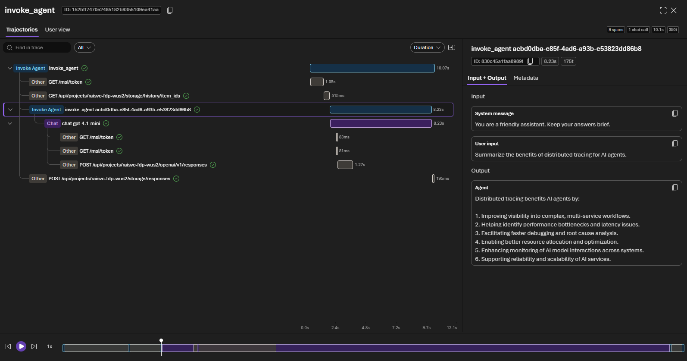
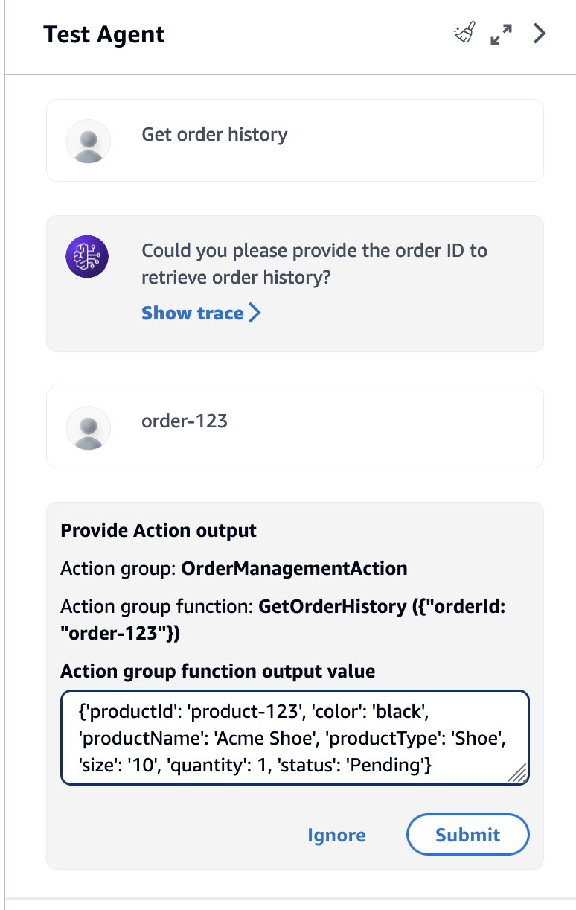
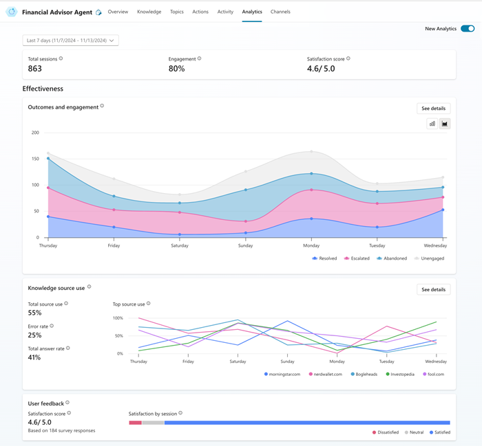

هل تعليمات النظام (System Prompt) ضابط رقابي كافٍ؟
عند مراجعة عملية تعتمد على وكيل ذكاء اصطناعي (AI Agent)، قد تجد تعليمات واضحة تمنعه من تنفيذ بعض الإجراءات. لكن السؤال الأهم للمراجع هو: هل هذه التعليمات توجّه السلوك فقط، أم أن النظام يمنع التنفيذ تقنيًا؟
🧩 سيناريو مبسّط: استرداد مالي مرتفع القيمة
تستخدم منشأة وكيل ذكاء اصطناعي لمعالجة طلبات استرداد المبالغ. تسمح السياسة للوكيل بتنفيذ العمليات منخفضة الخطورة، بينما تتطلب العمليات مرتفعة القيمة موافقة بشرية قبل التنفيذ.
تعليمات فقط أم ضابط تقني؟
تعليمات النظام (System Prompt)
بوابة الموافقة (Approval Gate)

ما الذي يبحث عنه؟ تحقق من أن الموافقة مرحلة فعلية داخل سير العمل، وأن التنفيذ لا يستمر قبل اكتمال الموافقة المطلوبة، وأن منطق الموافقة منفصل عن قرار النموذج قدر الإمكان.
لماذا يهم هذا المراجع الداخلي؟
قد تكون التعليمات صحيحة ومكتوبة بوضوح، لكن ذلك لا يثبت أن التنفيذ سيتوقف فعليًا عند الحاجة.
لا يكفي السؤال عن السياسة أو قراءة تعليمات النظام؛ يجب التحقق من مسار التنفيذ والصلاحيات والسجلات.
الحذف والتحويل المالي وتغيير الصلاحيات والإرسال الخارجي أمثلة على إجراءات قد تحتاج ضوابط أقوى.
يمكن استخدامها لتوجيه الوكيل، لكنها تعمل بصورة أفضل عندما تدعمها صلاحيات محدودة وبوابات موافقة وسجلات واضحة.
ماذا يطلب المراجع؟
لفهم القواعد والحدود والتعليمات التي تم تعريفها للوكيل.
لتحديد موضع الموافقة البشرية وما إذا كانت خارج قرار النموذج.
ما الإجراءات التي تحتاج موافقة؟ وما الأساس المستخدم لتحديد مستوى الخطر؟
هل يملك الوكيل صلاحية التنفيذ أصلًا؟ وهل تطبق المنشأة أقل قدر من الصلاحيات (Least Privilege)؟
لإثبات من وافق، ومتى تمت الموافقة، وما الإجراء الذي نُفذ بعدها.
للتحقق من أن التفويض (Authorization) وحدود التنفيذ مفروضة تقنيًا في النظام الفعلي.

ما الذي يبحث عنه؟ هل للوكيل هوية محددة؟ ما الصلاحيات المرتبطة بها؟ هل تتوافق مع مبدأ أقل قدر من الصلاحيات (Least Privilege)؟ وهل يمكن ربط نشاط الوكيل بهذه الهوية في السجلات؟
كيف يختبر المراجع الضابط؟
اختر حالة مرتفعة الخطورة
اختر عملية يفترض أن تتطلب موافقة بشرية وفق السياسة المعتمدة.
نفّذ الاختبار في بيئة مصرح بها
استخدم بيئة اختبار أو إجراءً معتمدًا، ولا تختبر عملية حساسة مباشرة في الإنتاج دون تصريح.
حاول المتابعة دون موافقة
تحقق مما إذا كان سير العمل يتوقف تقنيًا أم يعتمد على قرار الوكيل فقط.
راجع السجلات
تحقق من أن الرفض أو التوقف والموافقة اللاحقة والتنفيذ جميعها مسجلة ويمكن تتبعها.
✅ النتيجة المتوقعة للاختبار

ما الذي يبحث عنه؟ هل يمكن إعادة بناء المهمة من البداية إلى النهاية؟ وهل تظهر الأدوات المستخدمة ووقت التنفيذ والنتائج بصورة قابلة للتتبع؟

ما الذي يبحث عنه؟ هل يتم اختبار سلوك الوكيل قبل الاعتماد؟ وهل يمكن مراجعة الخطوات، واستدعاءات الأدوات، وقواعد المعرفة المستخدمة أثناء الاختبار؟
ما المخاطر التي يبحث عنها المراجع؟
تنفيذ إجراء غير مصرح به
قد يتحول قرار غير صحيح أو غير متوقع إلى إجراء مالي أو تشغيلي فعلي.
صلاحيات أوسع من الحاجة
يمتلك الوكيل صلاحية تنفيذ إجراء كان يفترض أن يكون خارج نطاقه أو مشروطًا بالموافقة.
ضعف قابلية التتبع
لا يمكن إثبات من وافق، ومتى تمت الموافقة، وما الذي نُفذ بعدها.

ما الذي يبحث عنه؟ هل تتم مراقبة الأداء والفشل بصورة دورية؟ من يراجع المؤشرات؟ هل توجد معايير للتصعيد عند ظهور سلوك غير طبيعي أو تراجع في النتائج؟
أمثلة على ملاحظات قد يكتشفها المراجع
قد يتم تجاوز التعليمات نتيجة سلوك غير متوقع أو مدخلات تؤثر في قرار الوكيل، مما يسمح بتنفيذ إجراء مرتفع الأثر.
الاعتماد على توجيه النموذج بدل فصل قرار السماح بالتنفيذ عن استدلاله.
فرض بوابة موافقة (Approval Gate) في سير العمل أو النظام المنفذ للعملية قبل الإجراءات عالية الأثر.
قد يؤدي خطأ أو تلاعب إلى تنفيذ معاملة تتجاوز مستوى الاستقلالية الذي وافقت عليه المنشأة.
عدم مواءمة صلاحيات الهوية التقنية مع حدود العمليات المسموح بها.
تطبيق أقل قدر من الصلاحيات (Least Privilege) وفرض الحدود داخل النظام الفعلي، وليس في التعليمات فقط.
يصعب التحقق من أن الإجراءات الحساسة خضعت للمراجعة المطلوبة أو التحقيق في الحوادث لاحقًا.
تصميم سير العمل لا يحفظ هوية الموافق ووقت الموافقة وربطها بالإجراء المنفذ.
تضمين الموافقة ضمن سجل التدقيق (Audit Trail) وربطها بالطلب والهوية والوقت والنتيجة.
هل كل عملية تحتاج إلى موافقة بشرية؟
السؤال الذي يخرج به المراجع
لا يكفي أن تسأل: «هل طلبنا من الوكيل ألّا ينفذ الإجراء؟»
السؤال الأقوى هو: هل صُمم النظام بحيث لا يستطيع تنفيذ الإجراء أصلًا إلا بعد استيفاء شرط الموافقة؟
هذا هو الفرق بين توجيه سلوكي وضابط تقني يمكن للمراجع اختباره.
المصادر الرسمية
بُني هذا المحتوى بصورة استرشادية على المصادر الآتية. إجراءات المراجعة المقترحة في المقال نموذج عملي وليست قائمة رسمية صادرة عن هذه الجهات.
يدعم مبدأ فرض التفويض في الأنظمة المنفذة، واستخدام الموافقة البشرية للإجراءات عالية الأثر بدل الاعتماد على النموذج وحده.
فتح المصدر الرسمي ↗يوصي بفرض المراجعة البشرية للإجراءات عالية الخطورة أو غير القابلة للتراجع من خلال منطق منسق سير العمل، لا من خلال استدلال النموذج.
فتح المصدر الرسمي ↗يتناول تحديد نطاق استخدام النظام، وتوثيق آليات الإشراف البشري، وضوابط المخاطر بما يتناسب مع سياق النظام واستخدامه.
فتح المصدر الرسمي ↗يركز على ملكية الوكيل، الأدوات المسموحة، الإجراءات المسموحة والممنوعة، ومراقبة ما نفذه الوكيل فعليًا.
فتح المصدر الرسمي ↗